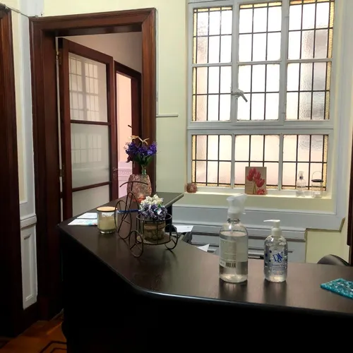
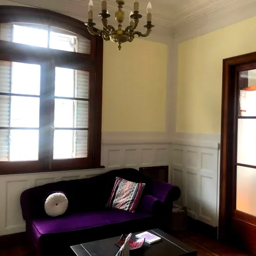
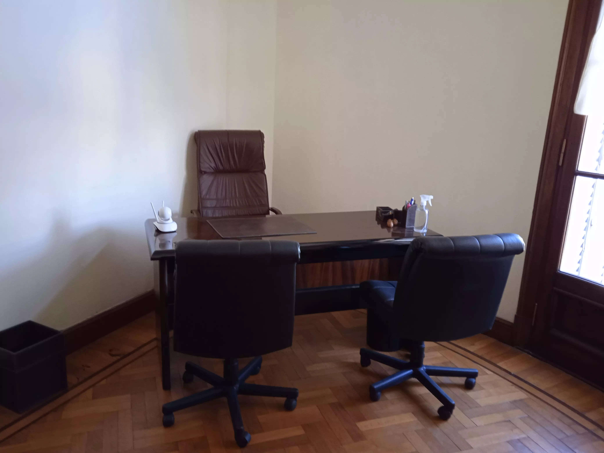

| Doctor MillemaciAsistencia Medica de Baja Complejidad |
| Staff Profesional | Aranceles | Solicitar Turno | Telemedicina | Receta Electronica |
   | Asistencia Medica de Baja Complejidad,
ofrece atencion medica privada de baja complejidad. El servicio lo
puede recibir tanto a domicilio (solo C.A.B.A.), como en consultorio (C.A.B.A.).Brindado por medico egresado de la Universidad
de Buenos Aires (U.B.A.), especializado en Medicina Interna (Clinica
Medica), de experiencia profesional amplia, principalmente ejerce la
profesion en el ambito Publico (Hospitales del Gobierno de la Ciudad de
Buenos Aires - G.C.B.A-). Solo atiendo casos de Clinica Medica
(pacientes de 15 a 65 anios).
Que significa Baja Complejidad?: Comprende patologias que no son graves, ni comprometen la vida del paciente, al corto plazo. En definitiva son los casos que se atenderian en un consultorio medico. Ejemplo: angina, cuadros febriles, tos, diarrea, resfrios, traumatismos leves, lesiones en piel, visitas de medicina laboral, dolor de cintura, solicitud de chequeos medicos, apto fisico deportivo (solo actividades recreativas), etc. Atiende Obras Sociales?: No. La asistencia es privada (arancelada). Como solicito la asistencia?: La misma se solicita a traves de turnos telefonicos, y se realiza en el dia de la solicitud. El medico asiste al paciente en su domicilio, o en consultorio (CABA), confecciona la Historia Clinica digital al momento del acto medico, indicara las medicaciones y/o estudios que ameriten la consulta. Se extendera certificado medico, con la fecha y diagnostico de la atencion, en el caso que el paciente lo requiriese (Ley Basica de Salud -C.A.B.A- 153/99 / Ley 26.529/2009 - Derechos del paciente, art.19). Cual es el area de cobertura geografica?: Atiendo en el area de la Ciudad Autonoma de Buenos Aires (C.A.B.A.): consultorio, y/o a domicilio (solo C.A.B.A.). (ver Telemedicina). Cual es el horario de Atencion?: De Lunes a Viernes (dias habiles), de 12:00 a 18:00hs. Como se abona el Servicio?: Se abona al Profesional Medico al final de la atencion, en efectivo, o con todas la tarjetas de credito, debito, QR (Mercado Pago), y/o transferencia bancaria. Los domicilios se abonan por adelantado y se realizan a continuacion del pago, el mismo dia de la solicitud. Se entrega factura?: Si, factura fiscal C (A.F.I.P.), consumidor final. |
| (c) 2013 - 2025. WebMaster carmillemaci@gmail.com |